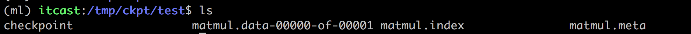

模型保存与恢复、自定义命令行参数、
在我们训练或者测试过程中，总会遇到需要保存训练完成的模型，然后从中恢复继续我们的测试或者其它使用。模型的保存和恢复也是通过tf.train.Saver类去实现，它主要通过将Saver类添加OPS保存和恢复变量到checkpoint。它还提供了运行这些操作的便利方法。
tf.train.Saver(var_list=None, reshape=False, sharded=False, max_to_keep=5, keep_checkpoint_every_n_hours=10000.0, name=None, restore_sequentially=False, saver_def=None, builder=None, defer_build=False, allow_empty=False, write_version=tf.SaverDef.V2, pad_step_number=False)
- var_list:指定将要保存和还原的变量。它可以作为一个dict或一个列表传递.
- max_to_keep：指示要保留的最近检查点文件的最大数量。创建新文件时，会删除较旧的文件。如果无或0，则保留所有检查点文件。默认为5（即保留最新的5个检查点文件。）
- keep_checkpoint_every_n_hours：多久生成一个新的检查点文件。默认为10,000小时
保存
保存我们的模型需要调用Saver.save()方法。save(sess, save_path, global_step=None)，checkpoint是专有格式的二进制文件，将变量名称映射到张量值。
import tensorflow as tf
a = tf.Variable([[1.0,2.0]],name="a")
b = tf.Variable([[3.0],[4.0]],name="b")
c = tf.matmul(a,b)
saver=tf.train.Saver()
with tf.Session() as sess:
tf.global_variables_initializer().run()
print(sess.run(c))
saver.save(sess, '/tmp/ckpt/test/matmul')
我们可以看保存了什么文件

在多次训练的时候可以指定多少间隔生成检查点文件
saver.save(sess, '/tmp/ckpt/test/matmu', global_step=0) ==> filename: 'matmu-0'
saver.save(sess, '/tmp/ckpt/test/matmu', global_step=1000) ==> filename: 'matmu-1000'
恢复
恢复模型的方法是restore(sess, save_path)，save_path是以前保存参数的路径，我们可以使用tf.train.latest_checkpoint来获取最近的检查点文件(也恶意直接写文件目录)
import tensorflow as tf
a = tf.Variable([[1.0,2.0]],name="a")
b = tf.Variable([[3.0],[4.0]],name="b")
c = tf.matmul(a,b)
saver=tf.train.Saver(max_to_keep=1)
with tf.Session() as sess:
tf.global_variables_initializer().run()
print(sess.run(c))
saver.save(sess, '/tmp/ckpt/test/matmul')
# 恢复模型
model_file = tf.train.latest_checkpoint('/tmp/ckpt/test/')
saver.restore(sess, model_file)
print(sess.run([c], feed_dict={a: [[5.0,6.0]], b: [[7.0],[8.0]]}))
自定义命令行参数
tf.app.run(),默认调用main()函数，运行程序。main(argv)必须传一个参数。
tf.app.flags，它支持应用从命令行接受参数，可以用来指定集群配置等。在tf.app.flags下面有各种定义参数的类型
DEFINE_string(flag_name, default_value, docstring)
DEFINE_integer(flag_name, default_value, docstring)
DEFINE_boolean(flag_name, default_value, docstring)
DEFINE_float(flag_name, default_value, docstring)
第一个也就是参数的名字，路径、大小等等。第二个参数提供具体的值。第三个参数是说明文档
tf.app.flags.FLAGS,在flags有一个FLAGS标志，它在程序中可以调用到我们前面具体定义的flag_name.
import tensorflow as tf
FLAGS = tf.app.flags.FLAGS
tf.app.flags.DEFINE_string('data_dir', '/tmp/tensorflow/mnist/input_data',
"""数据集目录""")
tf.app.flags.DEFINE_integer('max_steps', 2000,
"""训练次数""")
tf.app.flags.DEFINE_string('summary_dir', '/tmp/summary/mnist/convtrain',
"""事件文件目录""")
def main(argv):
print(FLAGS.data_dir)
print(FLAGS.max_steps)
print(FLAGS.summary_dir)
print(argv)
if __name__=="__main__":
tf.app.run()